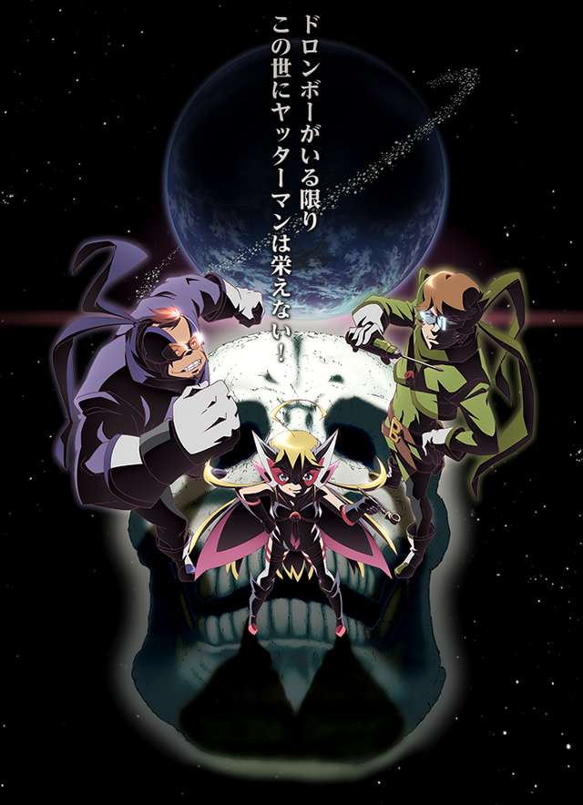

Yoru no Yatterman

Série de 12 épisodes, 2015
Une petite fille regarde la terre visible au loin sur l'océan, le Royaume des Yatterman, un pays gouverné par les héros du même nom.
Un jour la petite fille essaye de demander de l'aide aux Yatterman afin de soigner sa maman malade, et va s'aventurer vers le Royaume. Elle est finalement chassée et sa mère meurt sans aide aucune.
Forte de ses origines, elle va essayer avec les descendants de la bande des voleurs Dorombo, Boyacky et Tonzura, de combattre les Yatterman, car un vrai héros ne se comporte pas de la sorte.